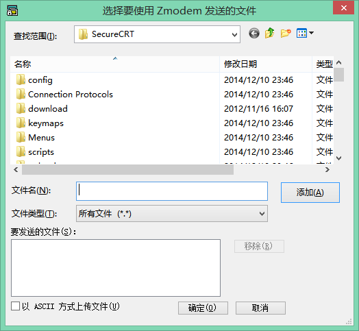
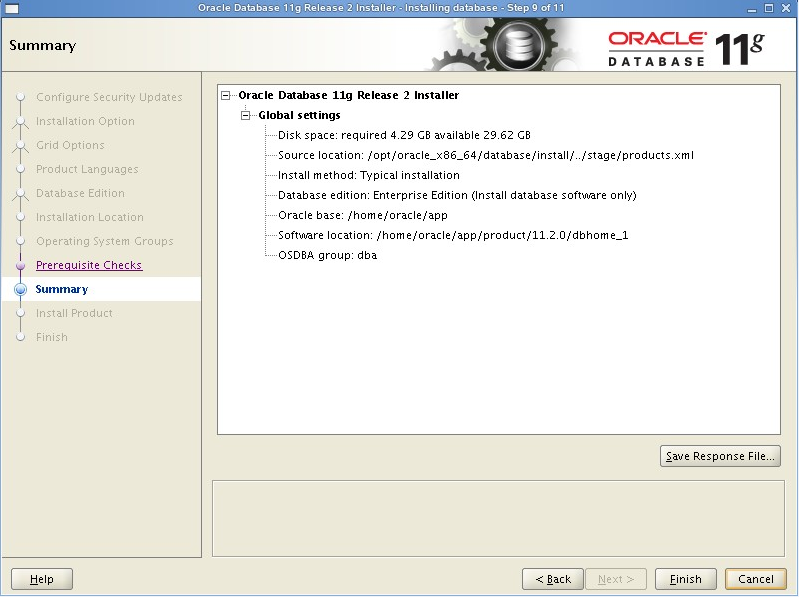

关于Linux中Oracle的安装流程及其问题（仅单实例）
更新日期:
Linux中安装Oracle，不同于windows。
Linux在安装时，要作些必要的分区配置，以便进行Oracle的安装；
同时需要创建专门的数据库用户和组，并配置环境变量
root登录
使用 root 来配置 Oracle 环境
其中**检查环境**部分，需要在安装 Oracle
检查和配置环境
检查环境
1、swap空间
# swap 空间大小，应满足以下条件
# 内存 1~2 G，swap 空间大小应为2倍内存
# 内存 2~16 G, swap 空间大小等同于内存
# 内存 > 16 G，swap 空间大小为 16 G
grep MemTotal /proc/meminfo
2、空闲硬盘
# Oracle 企业版或标准版，需要至少约 4G 安装空间，约 2G 数据文件空间
# /tmp 空间信息
df -h /tmp
# 各个磁盘空间信息
df -h
配置环境
1、需安装软件包（以 RHEL 6 为例）
以下软件包可能已安装，另 x86_64 为 64 位，i686 为 32 位
注意，早期的 32 位包后缀是 i386
若在其后图形化安装的检查中，提示某些包未安装，可能是 Oracle 安装检查不能识别部分 i686 的文件（已安装）
binutils-2.20.51.0.2-5.11.el6 (x86_64)
compat-libcap1-1.10-1 (x86_64)
compat-libstdc++-33-3.2.3-69.el6 (x86_64)
compat-libstdc++-33-3.2.3-69.el6 (i686)
gcc-4.4.4-13.el6 (x86_64)
gcc-c++-4.4.4-13.el6 (x86_64)
glibc-2.12-1.7.el6 (i686)
glibc-2.12-1.7.el6 (x86_64)
glibc-devel-2.12-1.7.el6 (x86_64)
glibc-devel-2.12-1.7.el6 (i686)
ksh
libgcc-4.4.4-13.el6 (i686)
libgcc-4.4.4-13.el6 (x86_64)
libstdc++-4.4.4-13.el6 (x86_64)
libstdc++-4.4.4-13.el6 (i686)
libstdc++-devel-4.4.4-13.el6 (x86_64)
libstdc++-devel-4.4.4-13.el6 (i686)
libaio-0.3.107-10.el6 (x86_64)
libaio-0.3.107-10.el6 (i686)
libaio-devel-0.3.107-10.el6 (x86_64)
libaio-devel-0.3.107-10.el6 (i686)
libXext-1.1 (x86_64)
libXext-1.1 (i686)
libXtst-1.0.99.2 (x86_64)
libXtst-1.0.99.2 (i686)
libX11-1.3 (x86_64)
libX11-1.3 (i686)
libXau-1.0.5 (x86_64)
libXau-1.0.5 (i686)
libxcb-1.5 (x86_64)
libxcb-1.5 (i686)
libXi-1.3 (x86_64)
libXi-1.3 (i686)
make-3.81-19.el6
sysstat-9.0.4-11.el6 (x86_64)
安装Oracle软件
命令行操作
1、配置 Oracle 用户和组
# 创建组
groupadd oinstall
# 创建 OSDBA 组
groupadd dba
# 创建 Oracle 用户
useradd –g oinstall –G dba oracle
# 修改Oracle 密码
passwd oracle
2、配置系统内核参数
vim /etc/sysctl.conf
添加以下内容：
fs.aio-max-nr = 1048576
# 该参数表示文件句柄的最大数量
# 文件句柄设置表示在linux系统中可以打开的文件数# 量
fs.file-max = 6815744
# 该参数表示系统一次可以使用的共享内存总量（以页为单位）。缺省值就是2097152
# 通常不需要修改
kernel.shmall = 524288
# 系统共享内存大小优化
kernel.shmmax = 524288
# 这个内核参数用于设置系统范围内共享内存段的最大数量。该参数的默认值是4096 # 通常不需要更改
kernel.shmmni = 4096
kernel.sem = 250 32000 100 128
#表示用于向外连接的端口范围。缺省情况下很小：32768到61000，改为1024到65000
net.ipv4.ip_local_port_range = 9000 65500
# 默认的TCP/IP接收缓冲大小
net.core.rmem_default = 262144
# 最大socket读buffer,可参考的优化值:873200
net.core.rmem_max = 4194304
# 默认的TCP/IP发送窗口大小
net.core.wmem_default = 262144
# 最大socket写buffer,可参考的优化值:873200
net.core.wmem_max = 1048586
使修改后系统内核参数立即生效：
sysctl -p
3、配置 Oracle 用户资源限制
vi /etc/security/limits.conf
在其后增加以下内容：
oracle soft nproc 2047
oracle hard nproc 16384
oracle soft nofile 1024
oracle hard nofile 65536
oracle soft stack 10240
4、配置 Oracle 相关目录
mkdir -p /home/oracle_11/app/
chown -R oracle:oinstall /home/oracle_11/app/
chown -R oracle:oinstall /home/oracle_11
chmod -R 775 /home/oracle_11/app/
5、配置 Oracle 用户环境
vim /home/oracle/.bash_profile
在该文件后增加以下内容：
umask 022
export ORACLE_BASE=/home/oracle_11/app
export ORACLE_HOME=$ORACLE_BASE/oracle/product/11.2.0/db_1
export ORACLE_SID=orcl
# Oracle实例名，可修改
export PATH=$PATH:HOME/bin:$ORACLE_HOME/bin
login：登陆配置文件
附：etc指的系统配置文件目录，pam.d指的是验证登陆配置
vim /etc/pam.d/login
在该文件中，增加以下内容：
session required /lib/security/pam_limits.so
session required pam_limits.so
profile：配置环境变量，对所有用户有效
vim /etc/profile
在该文件后，增加以下内容：
if [ $USER = "oracle" ]; then
if [ $SHELL = "/bin/ksh" ]; then
ulimit -p 16384
ulimit -n 65536
else
ulimit -u 16384 -n 65536
fi
fi
6、配置 Oraclle 用户图形化界面展示
查看 oracle 用户是否已设置 DISPLAY 变量
echo $DISPLAY
若为空，则在 oracle 用户目录下的 .bash_profile 中增加如下内容：
DISPLAY:=0.0
注：0.0表示使用本地机器界面
图形化界面安装
1、准备
附：lrzsz 安装过程
yum install lrzsz
ln -s /usr/local/lrzsz/bin/lrz rz
ln -s /usr/local/lrzsz/bin/lsz sz
使用 secureCRT，root登录（一般安装软件都是用管理员权限）
rz –be
二进制上传大型文件，注意勾销“以 ASCII 方式上传文件”

选择 Oracle 官网下载安装包后，确定，开始上传
上传完毕后，执行命令
mv linux* /tmp
cd /tmp
unzip linux.x64_11gR2_database_1of2.zip
unzip linux.x64_11gR2_database_2of2.zip
# 此步用户连接远程服务器（此处使用本地机器，略）
# xhost +
# 切换到用户 oracle，开始安装
su - oracle
# 防止中文乱码
export LANG=en_US
cd /database
./runInstaller
2、图形化安装过程
创建数据库实例



其后，点击 Finish 开始安装。
若安装过程中，出现错误。需要查看日志或上网检索原因（一般是没有安装必须原则的软件包）
3、图形化安装结束后，需执行2个脚本
su – root
cd /home/oracle/app/oracle/product/11.2.0/dbhome_1
sh root.sh
cd /home/oracle/app/oraInventory
sh orainstRoot.sh
4、创建实例
su - oracle
export LANG=en_US
dbca
显示数据库配置向导界面，
（1）选择“create a database”
（2）选择“custom database”
（3）database 和 sid 均设为 orcl（可按需命名）
（4）不配置“enterprises manager”，实际中很少用此功能
（5）密码使用统一密码，便于记忆（工作中，按要求设置，可能是每个用户密码不同）
（6）数据库存放位置采取默认
（7）不勾选快速回复和归档，工作中，快速恢复和归档按需设置
注：归档便于查看数据库信息
（8）按需选择“Database Components”
（9）数据库参数一般选择默认
另外，中文开发时，字符集选择 ZHS16GBK - GBK 16-bit Simplified Chinese
National Character Set 选择 AL16UTF16 - Unicode UTF-16 Universal character set
其余默认
（10）测试实例是否创建成功
打开一个新的终端
sqlplus /nolog
若显示 Oracle 信息，则实例创建成功
配置监听和本地网络服务
su - oracle
netca
显示数据库网络配置界面
（1）选择 “Listener configuration”
（2）选择 “Add”
（3）配置 Listener 名称和所用协议（一般为 TCP）
（4）不配置其他监听器
（5）选择“Local Net Service Name configuration”
（6）选择“Add”
（7）输入“Service Name”，要与图形化安装过程中输入的 sid 相同
（8）协议使用 TCP
（9）输入 Host name（即 Oracle 安装系统 ip 地址）和端口号（默认是1521）
（10）选择“Yes，perform a test”
（11）输入图形化安装时，确定的用户和密码，查看测试结果
（12）若不成功，开放端口 1521
iptables -I INPUT -p tcp --dport 1521 -j ACCEPT
service iptables save
iptables：将防火墙规则保存到 /etc/sysconfig/iptables： [确定]
service iptables restart
iptables：将链设置为政策 ACCEPT：filter [确定]
iptables：清除防火墙规则： [确定]
iptables：正在卸载模块： [确定]
iptables：应用防火墙规则： [确定]
service iptables status
再次测试，成功
（13）输入 service name，一般与 sid 相同
（14）结束，关闭界面
额外配置
使用 dbstart 和 dbshut 来启动/关闭数据库
使用dbstart和dbstop来启动Oracle服务
可能使用dbstart命令来启动数据库更方便一些,但初次安装完oracle之后使用dbstart命令会报这样的错误
ORACLE_HOME_LISTNER is not SET, unable to auto-start Oracle Net Listener
Usage: /u01/app/oracle/product/11.2/db/bin/dbstart ORACLE_HOME
出现这样错误的原因是由于没有设置ORACLE_HOME_LISTNER的原因,我们查看一下dbstart这个文件
more /home/oracle_11/app/oracle/product/11.2.0/db_1/bin/dbstart
部分内容如下
# First argument is used to bring up Oracle Net Listener
ORACLE_HOME_LISTNER=$1
if [ ! $ORACLE_HOME_LISTNER ] ; then
echo "ORACLE_HOME_LISTNER is not SET, unable to auto-start Oracle Net Listener"
echo "Usage: $0 ORACLE_HOME"
else
LOG=$ORACLE_HOME_LISTNER/listener.log
# Set the ORACLE_HOME for the Oracle Net Listener, it gets reset to
# a different ORACLE_HOME for each entry in the oratab.
export ORACLE_HOME=$ORACLE_HOME_LISTNER
解决方案：$ORACLE_HOME_LINTNER 的值原来为 $1,修改为 $ORACLE_HOME
再一次执行dbstart,但是没有反映,没有报错,如果我们需要使用dbstart,则需要在/etc/oratab这个文件中的实例最后的N改成Y,如下
orcl:/home/oracle_11/app/oracle/product/11.2/db:Y
OK,保存,再试一下dbstart命令,返回结果如下
Processing Database instance "orcl": log file /home/oracle_11/app/oracle/product/11.2.0/db_1/startup.log
dbshut进行同样的设置.
这样,以后就可以在启动监听之后直接使用dbstart和dbshut命令来启动和关闭数据了
Oracle自动启动
将Oracle服务添加到Linux开机启动项，以root用户建立/etc/rc.d/init.d/oradb脚本文件，文件内容如下：
#!/bin/bash
# chkconfig: 2345 90 10
export ORACLE_BASE=/home/oracle_11/app/
export ORACLE_HOME=$ORACLE_BASE/oracle/product/11.2.0/db_1
export ORACLE_SID=orcl
export PATH=$PATH:$ORACLE_HOME/bin
ORCL_OWN="oracle"
# if the executables do not exist -- display error
if [ ! -f $ORACLE_HOME/bin/dbstart -o ! -d $ORACLE_HOME ]
then
echo "Oracle startup: cannot start"
exit 1
fi
# depending on parameter -- start, stop, restart
# of the instance and listener or usage display
case "$1" in
start)
# Oracle listener and instance startup
echo -n "Starting Oracle: "
su - $ORCL_OWN -c "$ORACLE_HOME/bin/dbstart"
touch /var/lock/subsys/oradb
su - $ORCL_OWN -c "$ORACLE_HOME/bin/emctl start dbconsole"
echo "OK"
;;
stop)
# Oracle listener and instance shutdown
echo -n "Shutdown Oracle: "
su - $ORCL_OWN -c "$ORACLE_HOME/bin/emctl stop dbconsole"
su - $ORCL_OWN -c "$ORACLE_HOME/bin/dbshut"
rm -f /var/lock/subsys/oradb
echo "OK"
;;
reload|restart)
$0 stop
$1 start
;;
*)
echo "Usage: 'basename $0' start|stop|restart|reload"
exit 1
esac
exit 0
将该文件添加到开机启动
chmod 755 /etc/rc.d/init.d/oradb
chkconfig --add oradb
重启服务
service oradb stop
service oradb start
下次启动机器的时候，Oracle服务会随机器一起启动。